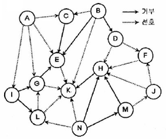
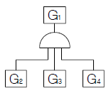
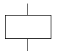
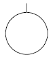
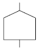
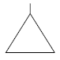
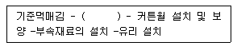
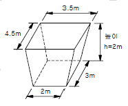
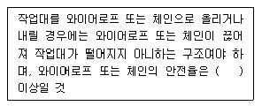

건설안전산업기사 (2015-09-19 기출문제)
1과목: 산업안전관리론
1. 사고예방대책의 기본원리 5단계에서 “사실의 발견” 단계에 해당하는 것은?
- 작업환경 측정
- 안전진단ㆍ평가
- 점검 및 조사 실시
- 안전관리 계획 수립
(정답률: 68%)

2. 재해 발생과 관련된 버드(Frank Bird)의 도미노 이론을 올바르게 나열한 것은?
- 기본원인→제어의 부족→직접원인→사고→상해
- 기본원인→직접원인→제어의 부족→사고→상해
- 제어의 부족→기본원인→직접원인→사고→상해
- 제어의 부족→직접원인→기본원인→상해→사고
(정답률: 60%)
3. Off JT(Off the Job Tranining)의 특징으로 옳지 않은 것은?
- 많은 지식, 경험을 교류할 수 있다.
- 직장의 실정에 맞게 실제적 훈련이 가능하다.
- 다수의 근로자들에게 조직적 훈련이 가능하다.
- 특별한 교재, 교구 및 설비 등을 이용하는 것이 가능 하다.
(정답률: 71%)
4. 무재해운동의 근본이념으로 가장 적절한 것은?
- 인간존중의 이념
- 이윤추구의 이념
- 고용증진의 이념
- 복리증진의 이념
(정답률: 84%)
5. 산업안전보건법령상 사업 내 안전ㆍ보건교육 중 채용시의 교육 내용에 해당하지 않는 것은? (단, 산업안전보건법 및 일반관리에 관한사항은 제외한다.)
- 사고 발생시 긴급조치에 관한 사항
- 유해ㆍ위험 작업환경 관리에 관한 사항
- 산업보건 및 직업병 예방에 관한 사항
- 기계ㆍ기구의 위험성과 작업의 순서 및 동선에 관한 사항
(정답률: 60%)
6. 조직이 리더에게 부여한 권한으로 볼 수 없는 것은?
- 전문성의 권한
- 보상적 권한
- 강압적 권한
- 합법적 권한
(정답률: 67%)
7. 매슬로우의 욕구단계 이론에서 자기의 잠재 능력을 극대화하여 원하는 것을 이루고자 하는 욕구에 해당되는 것은?
- 자아실현의 욕구
- 사회적 욕구
- 존경의 욕구
- 안전의 욕구
(정답률: 85%)
8. 산업안전보건법령상 안전ㆍ보건표지에 있어 금지표지의 종류에 해당하지 않는 것은?
- 금연
- 물체이동금지
- 접근금지
- 차량통행금지
(정답률: 62%)
9. 안전모의 의무안전인증기준에 있어 시험성능 기준의 항목에 해당되지 않는 것은?
- 내관통성
- 내수성
- 내식성
- 난연성
(정답률: 58%)
10. 위험예지훈련 기초 4라운드법의 진행에서 위험의 포인트를 결정하여 전원이 지적확인을 하는 단계로 가장 적절한 것은?
- 제1라운드 : 현상파악
- 제2라운드 : 본질추구
- 제3라운드 : 대책수립
- 제4라운드 : 목표설정
(정답률: 58%)
11. 안전ㆍ보건교육계획의 수립 시 고려하여야 할 사항과 가장 거리가 먼 것은?
- 교육지도안 및 교재
- 교육의 종류와 교육대상
- 교육 장소 및 교육 방법
- 교육의 과목 및 교육 내용
(정답률: 63%)
12. 정지된 열차 내에서 창밖으로 이동하는 다른 기차를 보았을 때, 실제로 움직이지 않아도 움직이는 것처럼 느껴지는 심리적 현상을 무엇이라 하는가?
- 가상운동
- 유도운동
- 자동운동
- 지각운동
(정답률: 77%)
13. 안전점검 시 점검자가 갖추어야 할 태도 및 마음가짐과 가장 거리가 먼 것은?
- 점검 본래의 취지 준수
- 점검 대상 부서의 협조
- 모범적인 점검자의 자세
- 점검결과 통보 생략
(정답률: 85%)
14. 75명의 상시근로자가 근무하는 사업장에서 1일 8시간, 연간 320일을 작업하는 동안에 6건의 재해가 발생하였다면 이 사업장의 도수율은 얼마인가?
- 17.65
- 26.04
- 31.25
- 33.33
(정답률: 62%)
15. 피로에 의한 정신적 증상과 가장 관련이 깊은 것은?
- 주의력이 감소 또는 경감된다.
- 작업의 효과나 작업량이 감퇴 및 저하된다.
- 작업에 대한 몸의 자세가 흐트러지고 지치게 된다.
- 작업에 대하여 무감각ㆍ무표정ㆍ경련 등이 일어난다.
(정답률: 67%)
16. 기업 내 한 부서의 구성원 상호간의 선호도를 나타낸 소시오그램(sociogram)이다. 리더에 해당하는 인물은?

- E
- G
- H
- K
(정답률: 80%)
17. A 사업장에서 각 부서별 안전경쟁제도를 실시할 때 위험도를 비교하는 수단과 안전관심을 높이는데 가장 효과적 인 것은?
- 강도율(severity rate of injury)
- 도수율(frequency rate of injury)
- 세이프 티 스코어(Safe-T-Score)
- 종합재해지수(frequency severity indicator)
(정답률: 50%)
18. 산업안전보건법령상 산업재해로 사망자가 발생하거나, 3일 이상의 휴업이 필요한 부상을 입거나, 질병에 걸린 사람이 발생한 경우, 산업재해가 발생한 날부터 얼마 이내에 산업재해조사표를 작성하여 관할 지방고용노동청장 또는 지청장에게 제출하여야 하는가?
- 24시간 이내
- 7일 이내
- 14일 이내
- 1개월 이내
(정답률: 57%)
19. 파브로브(pavlov)의 조건반사설에 의한 학습이론의 원리에 해당되지 않는 것은?
- 일관성의 원리
- 시간의 원리
- 강도의 원리
- 준비성의 원리
(정답률: 66%)
20. 학업 성취에 직접적인 영향을 미치는 요인과 가장 거리가 먼 것은?
- 적성(Aptitude)
- 준비도(Readiness)
- 동기유발(Motivating)
- 기억과 망각(Memory, Forgetting)
(정답률: 55%)
2과목: 인간공학 및 시스템안전공학
21. 인간에 의한 제어 정도에 따른 인간-기계 시스템의 유형에 해당하지 않는 것은?
- 기계화 시스템
- 자동화 시스템
- 수동 시스템
- 감시제어 시스템
(정답률: 63%)
22. 산업안전보건법령상 95dB(A)의 소음에 대한 허용노출 기준시간은? (단, 충격소음은 제외한다.)
- 1시간
- 2시간
- 4시간
- 8시간
(정답률: 49%)
23. 기계설비의 본질 안전화를 개선시키기 위하여 검토하여 야 할 사항으로 가장 적절한 것은?
- 재료, 제품, 공구 등을 놓아둘 수 있는 충분한 공간의 확보
- 작업자의 실수나 잘못이 있어도 사고가 발생하지 않도록 기계설비 설계
- 안전한 통로를 설정하고, 작업장소와 통로를 명확히 구분
- 작업의 흐름에 따라 기계설비를 배치시켜 운반작업 최소화
(정답률: 65%)
24. 다음 중 음성통신 시스템의 구성 요소에서 우수한 화자(speaker)의 조건으로 틀린 것은?
- 큰 소리로 말한다.
- 음절 지속시간이 길다.
- 말할 때 기본 음성주파수의 변화가 적다.
- 전체 발음시간이 길고, 쉬는 시간이 짧다.
(정답률: 47%)
25. 다음 중 부품배치의 원칙에 해당하지 않는 것은?
- 중요성의 원칙
- 사용빈도의 원칙
- 사용순서의 원칙
- 작업공간의 원칙
(정답률: 64%)
26. FT도에서 정상사상 G1의 발생확률은? (단 , G2=0.1, G3=0.2, G4=0.3의 발생확률을 갖는다.)

- 0.006
- 0.300
- 0.496
- 0.600
(정답률: 61%)
27. FTA에서 패스셋(path set) 및 최소패스셋(minimal path set)에 관한 내용으로 틀린 것은?
- 패스셋은 포함된 모든 사상이 일어나지 않았을 때 정상사상이 발생하지 않는 기본사상의 집합이다.
- 최소패스셋은 시스템의 신뢰성을 표시한다.
- 패스셋에 구한 정상사상의 발생확률이 그 시스템의 위험도이다.
- 최소패스셋은 어떤 고장이나 실수를 일으키지 않으면 재해가 일어나지 않는가를 나타내는 것이다.
(정답률: 51%)
28. 다음 중 인체측정과 작업공간 설계에 관한 용어의 설명으로 틀린 것은?
- 정상작업영역 : 상완을 자연스럽게 수직으로 늘어뜨린채, 손목을 움직여 닿을 수 있는 영역을 말한다.
- 최대작업영역 : 전완과 상완을 곧게 펴서 파악할 수 있는 영역을 말한다.
- 정적 인체치수 : 마틴식 인체 측정기를 사용하여 측정 한다.
- 동적 인체치수 : 신체의 움직임에 따른 활동범위 등을 측정한다.
(정답률: 49%)
29. 휘도가 200cd/m2이고, 반사율이 40%인 작업장의 조도 (lux)는?
- 80π
- 240π
- 500π
- 800π
(정답률: 47%)
30. 설비의 성능저하 또는 고장에 의한 정지 때문에 수리하는 설비보전 방법은?
- 예지보전(predictive maintenance)
- 개량보전(corrective maintenance)
- 보전예방(maintenance prevention)
- 사후보전((break-down maintenance)
(정답률: 55%)
31. 인적오류와 그에 따른 위험성을 예측하고 개선하기 위한 시스템 위험분석기법은?
- FMEA
- MORT
- FHA
- THERP
(정답률: 61%)
32. 정량적 표시장치 중 정확한 정보전달 측면에서 가장 우수한 장치는?
- 디지털 표시장치
- 지침고정형 표시장치
- 원형 지침이동형 표시장치
- 수직형 지침이동형 표시장치
(정답률: 75%)
33. 시스템의 위험분석기법에 해당하지 않는 것은?
- RULA
- ETA
- FMEA
- MORT
(정답률: 72%)
34. 다음 중 인체계측 치수의 성격이 다른 것은?
- 팔 뻗침
- 눈 높이
- 앉은 키
- 엉덩이 너비
(정답률: 44%)
35. FT도의 기호 중 전이기호에 해당하는 것은?




(정답률: 66%)
36. 주변 환경이 알맞은 온도에서 더운 환경으로 바뀔 때 인체의 적응 현상으로 틀린 것은?
- 발한이 시작된다.
- 직장 온도가 올라간다.
- 피부 온도가 올라간다.
- 피부를 경유하는 혈액량이 증가한다.
(정답률: 52%)
37. 시스템의 평가척도 중 시스템의 목표를 잘 반영하는가를 나타내는 척도는?
- 신뢰성
- 타당성
- 민감도
- 무오염성
(정답률: 50%)
38. 인간-기계 시스템에서 인간 실수가 발생하는 원인 중 출력 착오에 해당하는 것은?
- 감각의 착오
- 입력의 착오
- 정보 처리 착오
- 신체적 반응의 착오
(정답률: 43%)
39. 표시장치의 지침을 움직이기 위한 회전형 노브(knob)의 반지름을 1cm에서 2cm로 바꾸었을 때 조정반응(C/R)비율의 변화에 대한 설명으로 옳은 것은?
- 4배 감소
- 2배 감소
- 2배 증가
- 4배 증가
(정답률: 54%)
40. 동전던지기에서 앞면이 나올 확률 P(앞)=0.5 이고, 뒷면이 나올 확률 P(뒤)=0.25 일 때, 앞면과 뒷면이 나올 사건의 정보량을 각각 올바르게 나타낸 것은?
- 앞면 : 0.2bit, 뒷면 : 0.4bit
- 앞면 : 1.0bit, 뒷면 : 2.0bit
- 앞면 : 0.1bit, 뒷면 : 1.0bit
- 앞면 : 2.0bit, 뒷면 : 1.0bit
(정답률: 58%)
3과목: 건설시공학
41. 건축 목공사의 시공계획을 수립함에 있어서 필요치 않은 것은?
- 가설물 계획
- 시공계획도의 작성
- 현치도 작성
- 공정표 작성
(정답률: 64%)
42. 당해 공사의 특수한 조건에 따라 표준시방서에 대하여 추가, 변경, 삭제를 규정한 시방서는?
- 특기시방서
- 안내시방서
- 자료시방서
- 성능시방서
(정답률: 83%)
43. 콘크리트 배합을 결정하는 데 있어서 직접적으로 관계가 없는 것은?
- 물시멘트비
- 골재의 강도
- 단위시멘트량
- 슬럼프값
(정답률: 68%)
44. 다음 중 토질시험 항목에 해당하지 않는 것은?
- 소성 한계시험
- 3축 압축시험
- 할렬 인장시험
- 비중 시험
(정답률: 68%)
45. 다음 중 시방서에 기재하는 사항이 아닌 것은?
- 재료, 장비, 설비의 유형과 품질
- 조립, 설치, 세우기의 방법
- 도면의 도해적 표현
- 시험 및 코드 요건
(정답률: 59%)
46. 다음 중 굳지 않은 콘크리트의 측압에 대한 영향이 가장 작은 것은?
- 굳지 않은 콘크리트의 다지기 방법
- 기온 및 대기의 습도
- 콘크리트 부어넣기 속도
- 콘크리트 발열
(정답률: 63%)
47. 다음 금속커튼월 공사의 작업흐름 중 ( )에 가장 적합 한 것은?

- 자재정리
- 구체 부착철물의 설치
- seal 공사
- 표면마감
(정답률: 69%)
48. 그림과 같은 독립기초의 흙파기량으로 적당한 것은?

- 19.5m3
- 21.0m3
- 23.7m3
- 25.4m3
(정답률: 53%)
49. 건설도급회사의 공사실적 및 기술능력에 적합한 3~7개 정도의 시공회사를 선택한 후 그 시공회사로 하여금 입찰에 참여시키는 방법은?
- 특명입찰
- 공개경쟁입찰
- 지명경쟁입찰
- 제한경쟁입찰
(정답률: 74%)
50. 현장에서 철근공사와 관련된 사항으로 옳지 않은 것은?
- 철근공사 착공 전 구조도면과 구조계산서를 대조하는 확인작업 수행
- 도면오류를 파악한 후 정정을 요구하거나 철근상세도를 구조평면도에 표시하여 승인 후 시공
- 품질이 규격값 이하인 철근의 사용배제
- 구부러진 철근을 다시 펴는 가공작업을 거친 후 재사용
(정답률: 81%)
51. 콘크리트 타설시 물과 다른 재료와의 비중차이로 콘크리트 표면에 물과 함께 유리석회, 유기불순물 등이 떠오르는 현상을 무엇이라 하는가?
- 블리딩
- 컨시스턴시
- 레이턴스
- 워커빌리티
(정답률: 68%)
52. 콘크리트 재료적 성질에 기인하는 콘크리트 균열의 원인이 아닌 것은?
- 알칼리 골재반응
- 콘크리트의 중성화
- 시멘트의 수화열
- 혼화재료의 불균일한 분산
(정답률: 42%)
53. 거푸집 해체작업 시 주의사항 중 옳지 않은 것은?
- 지주를 바꾸어 세우는 동안에는 그 상부작업을 제한하여 하중을 적게 한다.
- 높은 곳에 위치한 거푸집은 제거하지 않고 미장 공사를 실시한다.
- 제거한 거푸집은 재사용을 위해 묻어 있는 콘크리트를 제거한다.
- 진동, 충격 등을 주지 않고 콘크리트가 손상되지 않도록 순서에 맞게 거푸집을 제거한다.
(정답률: 77%)
54. 현장용접 시 발생하는 화재에 대한 예방조치와 가장 거리가 먼 것은?
- 용접기의 완전한 접지(earth)를 한다.
- 용접부분 부근의 가연물이나 인화물을 치운다.
- 착의, 장갑, 구두 등을 건조상태로 한다.
- 불꽃이 비산하는 장소에 주의한다.
(정답률: 73%)
55. 다음 흙막이 공법 중 지하연속벽 공법이 아닌 것은?
- 이코스공법
- 웰 포인트공법
- 오거파일공법
- 슬러리월공법
(정답률: 61%)
56. 철근의 가스압접이음에 대한 설명으로 옳지 않은 것은?
- 접합전에 압접면을 그라인더로 평탄하게 가공해야 한다.
- 이음공법 중 접합강도가 아주 큰 편이며 성분원소의 조직변화가 적다.
- 철근의 항복점 또는 재질이 다른 경우에도 적용가능하다.
- 이음위치는 인장력이 가장 적은 곳에서 하고 한곳에 집중해서는 안된다.
(정답률: 65%)
57. 섬유재 거푸집에 관한 설명으로 옳지 않은 것은?
- 탈수효과로 표면강도가 약간 감소한다.
- 경화시간이 단축된다.
- 동결융해 저항성이 향상된다.
- 통기효과로 인한 블리딩 감소 및 잉여수의 배출로 미관이 좋아진다.
(정답률: 42%)
58. 철골공사에서 녹막이칠을 해야 하는 부분은?
- 고력볼트 마찰접합부의 마찰면
- 조립상 표면접합이 되는 면
- 콘크리트에 매설되는 부분
- 개방형 단면을 한 부재
(정답률: 62%)
59. 흙막이 벽은 보통 버팀대로 지지되어 있으나 그 대신어스앵커를 사용하기도 하는데 어스앵커의 PC강선에 가하는 힘의 종류는?
- 인장력
- 압축력
- 비틀림
- 전단력
(정답률: 66%)
60. 기초의 종류 중 기초슬래브의 형식에 따른 분류가 아닌 것은?
- 독립기초
- 연속기초
- 복합기초
- 직접기초
(정답률: 59%)
4과목: 건설재료학
61. 매스콘크리트의 타설 및 양생에 대한 설명 중 옳은 것은?
- 외기온이 영하로 내려가도 자체의 수화열만으로 충분히 양생가능하므로 별도의 양생조치가 불필요한다.
- 내부 수화열에 의한 콘크리트의 온도 상승 및 하강시 온도응력으로 인한 균열발생 가능성이 있다.
- 부재의 단면크기가 작기 때문에 건조수축에 의한 균열 발생 가능성이 가장 크다.
- 매트기초의 경우 수화발열량이 커서 콘크리트 온도가 높으므로, 표면온도를 낮추기 위한 방안이 필요하다.
(정답률: 43%)
62. 건축용 단열재 중 무기질이 아닌 것은?
- 암면
- 유리섬유
- 세라믹파이버
- 셀룰로즈파이버
(정답률: 41%)
63. 시멘트의 응결시험 방법으로 옳은 것은?
- 비카 시험
- 오토클레이브 시험
- 브레인 시험
- 비비 시험
(정답률: 36%)
64. 목재의 강도에 관한 설명 중 옳지 않은 것은?
- 목재의 제강도 중 섬유 평행방향의 인장강도가 가장 크다.
- 목재를 기둥으로 사용할 때 일반적으로 목재는 섬유의 평행방향으로 압축력을 받는다.
- 함수율이 섬유포화점 이상으로 클 경우 함수율 변동에 따른 강도변화가 크다.
- 목재의 인장강도 시험 시 죽은 옹이의 면적을 뺀 것을 재단면으로 가정한다.
(정답률: 52%)
65. 점도 벽돌(KS L 4201)의 성능 시험방법과 관련된 항목이 아닌 것은?
- 겉모양
- 압축강도
- 내충격성
- 흡수율
(정답률: 35%)
66. 습기가 있는 콘크리트나 모르타르에 알루미늄 새시를 직접 닿지 않도록 해야 하는데 그 이유로 가장 적합한 것은?
- 연질이며 강도가 낮아서
- 내수성이 약해서
- 산, 알칼리, 해수 등에 쉽게 침식되어서
- 열팽창율이 달라서
(정답률: 75%)
67. 콘크리트 표면도장에 가장 적합한 도료는?
- 염화비닐수지도료
- 조합페인트
- 클리어래커
- 알루미늄페인트
(정답률: 52%)
68. 다음 중 실(seal)재가 아닌 것은?
- 코킹재
- 퍼티
- 개스킷
- 트래버틴
(정답률: 59%)
69. 다음 중 열경화성 수지가 아닌 것은?
- 요소수지
- 폴리에틸렌수지
- 실리콘수지
- 알키드수지
(정답률: 52%)
70. 점토제품의 원료와 그 역할이 올바르게 연결된 것은?
- 규석, 모래 –점성 조절
- 장석, 석회석 –균열 방지
- 샤모트(chamotte) - 내화성 증대
- 식염, 붕사 –용융성 조절
(정답률: 41%)
71. 목재의 부패 조건에 관한 설명 중 옳지 않은 것은?
- 대부분의 부패균은 섭씨 약 20~40℃ 사이에서 가장 활동이 왕성하다.
- 목재의 증기 건조법은 살균효과도 있다.
- 부패균의 활동은 습도는 약 90% 이상에서 가장 활발 하고 약 20% 이하로 건조시키면 번식이 중단된다.
- 수중에 잠겨진 목재는 습도가 높기 때문에 부패균의 발육이 왕성하다.
(정답률: 60%)
72. 혼화재료 중 사용량이 비교적 많아서 그 자체의 부패가 콘크리트 비비기 용적에 계산되는 혼화재에 해당되지 않는 것은?
- 플라이 애쉬
- 팽창제
- 고성능 AE 감수제
- 고로슬래그 미분말
(정답률: 47%)
73. 합성수지계 접착제가 아닌 것은?
- 비닐 수지 접착제
- 에폭시 수지 접착제
- 요소 수지 접착제
- 카세인
(정답률: 65%)
74. 점토제품 제조에 관한 설명으로 옳지 않은 것은?
- 원료조합에는 필요한 경우 제점제를 첨가한다.
- 반죽과정에서는 수분이나 경도를 균질하게 한다.
- 숙성과정에서는 반죽덩어리를 되도록 크게 뭉쳐 둔다.
- 성형은 건식, 반건식, 습식 등으로 구분한다.
(정답률: 77%)
75. 스테인리스강에 대한 설명으로 옳지 않은 것은?
- 강도가 높고 열에 대한 저항성이 크다.
- 먼지가 잘 끼고 표면이 더러워지면 청소가 어렵다.
- 크롬(Cr)의 첨가량이 증가할수록 내식성이 좋아진다.
- 전기저항성이 크고 열전도율이 낮다.
(정답률: 62%)
76. 철근콘크리트에 사용하는 굵은 골재의 최대치수를 정하는 가장 중요한 이유는?
- 재료분리현상을 막기 위해서
- 콘크리트가 철근사이를 자유롭게 통과할 수 있도록 하기 위해서
- 균질한 콘크리트를 만들기 위해서
- 사용골재를 줄이기 위해서
(정답률: 54%)
77. 지하실 방수공사에 사용되며, 아스팔트 펠트, 아스팔트 루핑 방수재료의 원료로 사용되는 것은?
- 스트레이트 아스팔트
- 블로운 아스팔트
- 아스팔트 컴파운드
- 아스팔트 프라이머
(정답률: 52%)
78. P.S.콘크리트 부재 제작 시 프리스트레스(prestress)를 도입시키기 위해 개발된 시멘트는?
- 제트 시멘트
- 알루미나 시멘트
- 인산 시멘트
- 팽창 시멘트
(정답률: 44%)
79. 코펜하겐 리브관에 관한 설명 중 옳지 않은 것은?
- 두께 50mm, 나비 100mm 정도의 판을 가공한 것이다.
- 집회장, 강당, 영화관, 극장에 붙여 음향조절 효과를 낸다.
- 열의 차단성이 우수하며 강도도 커서 외장용으로 주로 사용된다.
- 원래 코펜하겐의 방송국 벽에 음향효과를 내기 위해 사용한 것이 최초이다.
(정답률: 74%)
80. 다음 중 열 및 전기 전도율이 가장 큰 금속은?
- 알루미늄
- 크롬
- 니켈
- 구리
(정답률: 70%)
5과목: 건설안전기술
81. 양중기를 사용하는 작업에서 운전자가 보기 쉬운 곳에 부착하여야 하는 사항이 아닌 것은?
- 정격하중
- 운전속도
- 작업위치
- 경고표시
(정답률: 57%)
82. 항타기 또는 항발기에서 와이어로프의 절단하중 값과 와이어로프에 걸리는 하중의 최대값이 보기항과 같을 때 사용 가능한 경우는?
- 와이어로프의 절단하중 값 : 10ton, 와이어로프에 걸리는 하중의 최대값 : 2ton
- 와이어로프의 절단하중 값 : 15ton, 와이어로프에 걸리는 하중의 최대값 : 4ton
- 와이어로프의 절단하중 값 : 20ton, 와이어로프에 걸리는 하중의 최대값 : 6ton
- 와이어로프의 절단하중 값 : 25ton, 와이어로프에 걸리는 하중의 최대값 : 8ton
(정답률: 53%)
83. 철골공사 중 볼트작업 등을 하기 위하여 구조체인 철골에 매달아 작업발판을 만드는 비계로서 상하이동을 시킬 수 없는 것은?
- 말비계
- 이동식 비계
- 달대비계
- 달비계
(정답률: 59%)
84. 강관을 사용하여 비계를 구성하는 경우 띠장방향에서의 비계기둥의 간격으로 옳은 것은?
- 1.2m 이상 ~ 2.0m 이하
- 1.5m 이상 ~ 2.0m 이하
- 1.2m 이상 ~ 1.8m 이하
- 1.5m 이상 ~ 1.8m 이하
(정답률: 42%)
85. 유해위험 방지계획서 제출대상공사에 해당하는 것은?
- 지상 높이가 21m인 건축물 해체공사
- 최대지간 거리가 50m인 교량의 건설공사
- 연면적 5,000m2인 동물원 건설공사
- 깊이가 9m인 굴착공사
(정답률: 66%)
86. 산소결핍에 의한 재해의 예방대책에 대한 설명으로 옳지 않는 것은?
- 작업시작 전 산소농도를 측정한다.
- 공기호흡기 등의 필요한 보호구를 작업 전에 점검한다.
- 승인받은 밀폐공간이 아니면 절대 들어가서는 안된다.
- 산소결핍의 위험이 있는 장소에서는 산소농도가 10%이상 유지되도록 한다.
(정답률: 74%)
87. 콘크리트 타설 작업 시 준수사항으로 옳지 않은 것은?
- 바닥위에 흘린 콘크리트는 완전히 청소한다.
- 가능한 높은 곳으로부터 자연 낙하시켜 콘크리트를 타설 한다.
- 지나친 진동기 사용은 재료분리를 일으킬 수 있으므로 금해야 한다.
- 최상부의 슬래브는 이어붓기를 되도록 피하고 일시에 전체를 타설하도록 한다.
(정답률: 70%)
88. 발파작업 시 유의사항과 거리가 먼 것은?
- 적절한 경보를 하여 근로자와 제3자의 대피조치를 취한다.
- 화약류, 뇌관 등은 충격을 주지 말고 화기에 접근을 금지한다.
- 발파 후에는 불발 잔약의 확인과 진동에 의한 2차 붕괴 여부를 확인한다.
- 낙반, 부석처리 완료 후 작업 재개한다.
(정답률: 34%)
89. 콘크리트측압에 영향을 미치는 인자로 가장 거리가 먼 것은?
- 콘크리트의 컨시스턴시
- 콘크리트의 타설속도
- 대기의 온도 및 습도
- 콘크리트의 강도
(정답률: 65%)
90. 철골작업을 중지하여야 하는 풍속 기준은?
- 풍속이 초당 10미터 이상
- 풍속이 분당 10미터 이상
- 풍속이 초당 1미터 이상
- 풍속이 분당 1미터 이상
(정답률: 67%)
91. 근로자의 추락 등에 의한 위험을 방지하기 위하여 안전 난간을 설치할 때 준수하여야 할 기준으로 옳지 않은 것은?
- 안전난간은 구조적으로 가장 취약한 지점에서 가장 취약한 방향으로 작용하는 100kg 이상의 하중에 견딜 수 있는 튼튼하나 구조일 것
- 난간대는 지름 1.5cm 이상의 금속제 파이프나 그 이상의 강도를 가진 재료일 것
- 난간기둥은 상부난간대와 중간난간대를 견고하게 떠받칠 수 있도록 적정한 간격을 유지할 것
- 상부난간대와 중간난간대는 난간 길이 전체에 걸쳐 바닥면 등과 평행을 유지할 것
(정답률: 63%)
92. 히빙(heaving)현상이 가장 쉽게 발생하는 토질지반은?
- 연약한 점토 지반
- 연약한 사질토 지반
- 견고한 점토 지반
- 견고한 사질토 지반
(정답률: 62%)
93. 가설통로의 설치기준으로 옳지 않은 것은?
- 경사는 30° 이하로 하여야 한다.
- 수직갱에 가설된 통로의 길이가 15m 이상인 때에는 10m 이내마다 계단참을 설치한다.
- 경사가 10°를 초과하는 때에는 미끄러지지 아니하는 구조로 한다.
- 높이 8m 이상인 비계다리에는 7m 이내마다 계단참을 설치한다.
(정답률: 60%)
94. 액성한계(LL)가 32%, 소성한계(PL)가 12%일 경우 소성 지수(IP)는 얼마인가?
- 10%
- 20%
- 22%
- 44%
(정답률: 56%)
95. 건설공사 현장에서 사다리식 통로 등을 설치하는 경우의 준수기준으로 옳지 않은 것은?
- 사다리의 상단은 걸쳐놓은 지점으로부터 40cm 이상 올라가도록 할 것
- 폭은 30cm 이상으로 할 것
- 사다리식 통로의 기울기는 75° 이하로 할 것
- 발판의 간격은 일정하게 한다.
(정답률: 65%)
96. 다음은 고소작업대를 설치하는 경우에 대한 내용이다. ( )안에 알맞은 숫자는?

- 5
- 7
- 8
- 10
(정답률: 54%)
97. 펌프카에 의한 콘크리트 타설 시 안전수칙으로 옳지 않은 것은?
- 타설 순서는 계획에 의거 실시
- 타설 속도 및 속도 준수
- 장비사양의 적정호스 길이 초과 시 압송관 연결
- 펌프카 전후에는 식별이 용이한 안전표지판 설치
(정답률: 71%)
98. 건설재해 방지대책으로 옳지 않은 것은?
- 공사 계획 시부터 적정한 공법 및 공기를 선택하여 안전 관리상에 무리가 없도록 한다.
- 하도급을 줄 때 안전관리 책임한계를 명확히 한다.
- 매일 작업 시작 전에 안전보건에 관한 교육을 정기적 또는 수시로 실시한다.
- 작업시간을 자유롭게 하여 근로자의 편의를 도모한다.
(정답률: 75%)
99. 스크레이퍼의 용도로 가장 거리가 먼 것은?
- 적재
- 운반
- 하역
- 양중
(정답률: 60%)
100. 중량물을 들어올리는 자세에 대한 설명 중 옳은 것은?
- 다리를 곧게 펴고 허리를 굽혀 들어올린다.
- 되도록 자세를 낮추고 허리를 곧게 편 상태에서 들어 올린다.
- 무릎을 굽힌 자세에서 허리를 뒤로 젖히고 들어올린다.
- 다리를 벌린 상태에서 허리를 숙여서 서서히 들어올린다.
(정답률: 67%)